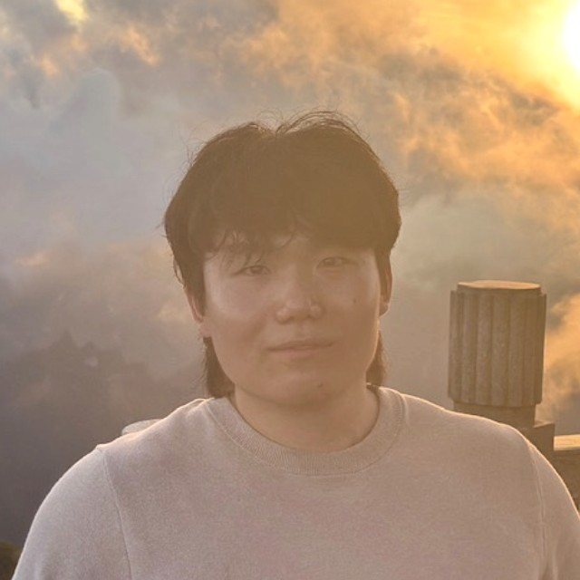
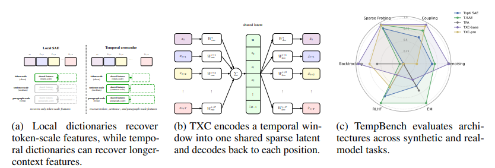
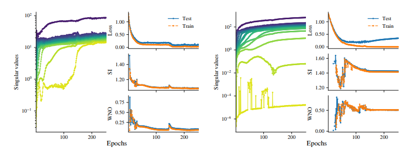
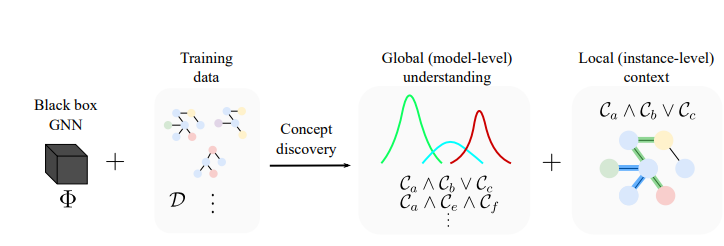

Han Xuanyuan
軒轅瀚 · Xuanyuan is my family name
I'm Han, an AI safety fellow at Anthropic, based in London.
I want to know whether AI agents are doing something they aren't telling us. So I study when and why they pursue hidden goals or misrepresent their reasoning, and whether we would notice.
Before working on safety, I spent four years in high frequency trading, most of it as a quantitative researcher at Tower Research and DRW, where I built predictive models and the production systems that traded on them.
My Bachelor's and Master's are in Computer Science, from the University of Cambridge, where I worked with Pietro Liò on graph neural networks.
I grew up in the Netherlands and Wales. When I'm not working, I'm usually lifting weights or playing video games.
Please feel free to reach out to me via email.

Selected Papers

D. Manning-Coe, Han Xuanyuan, A. Deshpande, A. Shportko, W. Fei
Mechanistic Interpretability Workshop, ICML, 2026
Paper | Code
Uses crosscoders to discover sparse, interpretable features and track how they emerge and shift across token positions in a sequence.

L. Pertl*, Han Xuanyuan*, P. Liò
NeurIPS 2025, UniReps Workshop; Proceedings of Machine Learning Research (PMLR) *Equal contribution.
Paper | Code
Extends the superposition hypothesis from language models to graphs, studying how GNNs represent more features than they have dimensions.

Han Xuanyuan, P. Barbiero, D. Georgiev, L. C. Magister, P. Liò
AAAI Conference on Artificial Intelligence (AAAI), 2023
Paper | Code
Analyses individual neurons to extract human-interpretable, global concepts learned by graph neural networks.
Earlier work
Shedding Light on Random Dropping and Oversmoothing — Han Xuanyuan, T. Zhao, D. Luo. NeurIPS Workshop: New Frontiers in Graph Learning, 2023.
Efficient Privacy-Preserving Inference for Convolutional Neural Networks — Han Xuanyuan, F. Vargas, S. Cummins. ICLR Workshop on PAIR²Struct, 2022.